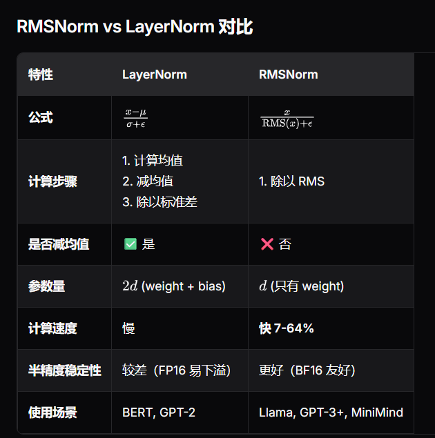

MiniMind 学习笔记 ¶
约 2414 个字 41 行代码 1 张图片 预计阅读时间 9 分钟
Abstract
MiniMind 学习资料来源：
- Github: joyehuang -- minimind-notes
Normalization/ 归一化 ¶
无归一化的情况：经过几层的传播后数据标准差迅速衰减到接近 0( 梯度消失 )；数值不稳定 (1.00 - 0.01)
使用 RMSNorm 归一化的情况：经过几层的传播后数据标准差基本维持在不错的数据；数值稳定 (1.00 - 0.82)
-
梯度消失：
无归一化的网络，激活值的标准差会随着层数增加而迅速衰减，当激活值越来越小，反向传播时梯度也会越来越小，最终接近 0。模型无法学习深层的特征
-
梯度爆炸 :
反之，如果数值越来越大，最终会超出浮点数范围，变成 NaN（Not a Number
） ，训练直接崩溃。
归一化 : ¶
-
核心思想：不改变信息内容，而是控制数据分布的尺度，调整到标准范围（均值 ≈ 0，标准差 ≈ 1）
每一层的输出都被 " 归一化 " 到标准范围 , 无论输入如何变化，输出都保持稳定。使得梯度能顺利传回每一层
-
好处 :
- 梯度稳定：反向传播时梯度不会消失或爆炸
- 学习率容忍度高：可以用更大的学习率，加速训练 / 收敛
- 深层网络可训练：可以堆叠更多层而不崩溃
-
LayerNorm
-
公式 :
\[ LayerNorm(x) = \gamma \left(\frac{x- \mu}{\sqrt{\sigma^2 + \epsilon}} \right) + \beta \] -
代码实现 :
class LayerNorm(nn.Module): def __init__(self, dim: int, eps: float = 1e-5): super().__init__() self.eps = eps self.weight = nn.Parameter(torch.ones(dim)) # γ self.bias = nn.Parameter(torch.zeros(dim)) # β def forward(self, x): mean = x.mean(dim=-1, keepdim=True) # 计算每个 token 的均值 var = x.var(dim=-1, unbiased=False, keepdim=True) # 方差 x_norm = (x - mean) / torch.sqrt(var + self.eps) # 标准化 return self.weight * x_norm + self.bias
-
-
RMSNorm:
- 全称：Root Mean Square Normalization（均方根归一化）
只做缩放，不减均值，直接除以 RMS，比 LayerNorm 更简单高效 均值为0时，LayerNorm变为RMSNorm
-
公式 :
\[ RMSNorm(x) = \frac{x}{RMS(x)} \odot \gamma \]\[ RMS(x) = \sqrt{\frac{1}{d}\sum_{i=1}^{d}x_i^2+\epsilon} \]其中，\(x\) 为输入向量，形状 [batch_size, seq_len, hidden_dim]；d 为隐藏维度 (hidden_dim)；\(\epsilon\) 为防止除零的小常数 (1e-5)；\(\gamma\) 为可学习的缩放参数，形状 [hidden_dim]；\(\odot\) 为逐元素乘法
-
作用：
保持每一层的激活标准差在 1.0 附近，确保梯度能够顺利传播回前面的层
-
可以不减均值的原因 :
- 在深层网络中，经过多层变换后，激活值的均值通常已经接近 0
- 只控制标准差（尺度）就足够稳定训练
- 省略减均值 → 减少计算 → 更快
- 在 LLM 训练中，RMSNorm 和 LayerNorm 的最终效果相当，但 RMSNorm 更快。实验验证了可以不减去均值
-
代码实现 :
class RMSNorm(torch.nn.Module): def __init__(self, hidden_dim: int, eps: float = 1e-5): super().__init__() self.eps = eps self.gamma = nn.Parameter(torch.ones(hidden_dim)) def _norm(self, x): # 核心：x / sqrt(mean(x²) + eps) # mean(-1)：在最后一维（hidden_dim）上计算均值，keepdim=True：保持维度，便于广播 # rsqrt 在 GPU 上有优化，更快 return x * torch.rsqrt(x.pow(2).mean(-1,keepdim=True) + self.eps) def forward(self, x): # type_as: 使_norm结果与x的数据类型保持一致(FP32) # 归一化计算需要较高精度,确保精度FP32 # 输入 x (BF16) → .float() (FP32) → 归一化计算 (FP32) # → .type_as(x) (BF16) → 输出 (BF16) return self.gamma * self._norm(x.float()).type_as(x) -
为什么代码中要用 .float() 和 .type_as(x)?
FP16/BF16 精度较低，归一化计算中的小数值容易下溢（变成 0）
.float()：转为 FP32，用高精度计算 ; .type_as(x)：转回原始数据类型，保持一致性
流程：输入 (BF16) → .float() (FP32) → 归一化 → .type_as(x) (BF16) → 输出
Note

RMSNorm 没有 bias 的原因 : RMSNorm 不减均值，所以不需要 bias
要注意 : LayerNorm 有 weight 和 bias 两个参数
Post-LN 与 Pre-LN: ¶
-
post-LN:
子层 -> 残差连接 -> 归一化
-
缺陷 :
- 残差路径上的梯度会被 LayerNorm 打断
- 深层网络（>12 层）训练不稳定 , 尤其是在模型层数很深的时候，梯度容易爆炸或消失
- 需要非常小的学习率
-
-
pre-LN( 用这个 ):
归一化 -> 子层 -> 残差连接
-
优势：
- 残差路径不会被归一化打断，梯度传播会更平滑 , 可以直接传播
- 每个子层的输入分布稳定
- 深层网络更容易训练 / 收敛 , 极大地提升了训练的稳定性
- 学习率容忍度更高
-
-
为什么 pre-LN 可以用更大的学习率 / 训练更稳定，而 post-LN 不行？
post-LN: 由于残差连接的输出直接累加到主干路径上，随着层数加深，输出的量级会不断累积，导致梯度在反向传播时变得非常大或非常小。
Post-LN + LayerNorm: 需要较小的学习率，因为主路径上的梯度流经归一化层，存在数值不稳定风险
Pre-LN + LayerNorm: 训练稳定，可以使用更大的学习率，因为主路径上的梯度直接通过残差连接，更稳定
-
数学原理 :
-
多层堆叠后：
\[x_L =x_0 + \sum_{i=0}^{L−1}F(x_i)\]Post-LN: 在残差相加之后，无法约束累加和的尺度。随着层数 \(L\) 增加，求和项的数值量级会持续叠加，输出特征的范数不断增大。
-
结合残差求导：
\[\frac{\partial x_{l+1}}{\partial x_l} = I+\frac{\partial F(x_l)}{\partial x_l}\]梯度爆炸 : 前向特征量级极大，主干网络 \(F\) 的权重为适配大尺度输入会被训练得很大，\(\frac{\partial F(x_l)}{\partial x_l}\)数值激增，叠加单位矩阵后梯度爆炸。
梯度消失 : 若网络层过多，累加特征尺度极端，激活函数进入饱和区，\(\frac{\partial F(x_l)}{\partial x_l}\)趋近于 0，整体梯度趋近于单位矩阵，浅层几乎无有效梯度更新。
-
Post-LN 放大问题，LayerNorm 仅作用于残差和之后，无法稳定每一层输入 \(F(x_l)\) 的分布，主干模块的输入尺度持续漂移，导数的波动被进一步放大。
-
Pre-LN 将归一化放在残差前，每层 F 的输入都被标准化为稳定分布，从源头抑制了特征量级累积，同时让梯度计算更稳定。
-
-
Q/K Norm¶
Q/K Norm：对 Q 和 K 做 RMSNorm 归一化。这是部分较新模型（如 Llama 3、Gemma 等）改进训练稳定性的做法，防止极端的注意力分数导致 Softmax 饱和
Q&A¶
-
loss 在前 100 步就变成了 NaN。可能的原因和解决方案是什么？
可能原因：
- 没有使用归一化 → 梯度爆炸
- 使用了 Post-LN → 深层网络不稳定
- 学习率太大 → 数值溢出
- 权重初始化不当 → 初始激活值过大
- FP16 精度问题 → 数值下溢或溢出
解决方案（按优先级
） ：- 确保使用 Pre-LN + RMSNorm：
-
降低学习率：
- 从 1e-3 降到 1e-4 或更小 -使用 warmup（前 N 步线性增加学习率）
-
检查权重初始化：
- 使用 Kaiming 或 Xavier 初始化
- 确保初始激活值在合理范围（std ≈ 1.0）
-
使用梯度裁剪：
- 使用 BF16 而不是 FP16,BF16 数值范围更大，更稳定
-
调试步骤：
- 在每一层后打印激活值的统计量（均值、标准差、max/min）
- 检查哪一层首先出现 NaN
- 针对性地调整该层的配置
-
为什么 RMSNorm 可以没有 bias，LayerNorm 需要 bias?bias 的作用是什么？
偏置项 bias 本质是可学习的平移量，作用是 :
- 恢复 “平移自由度”，避免归一化破坏数据分布 LN 会强制减均值μ，把数据中心拉到 0—— 这会抹掉数据原本的平移信息。用可学习bias把归一化后的数据平移到合适位置，让模型自主决定特征分布的中心，不被强制 0 中心锁死
- 适配激活函数的零点，保证非线性有效 GELU、Swish、ReLU等常用激活，有效非线性区都在零点附近。 不同层、不同任务需要微调激活的输入中心 —— bias就是用来精准调整激活输入的零点偏移，让非线性发挥最大作用，避免激活进入饱和区（比如 ReLU 负半轴全 0、GELU 梯度消失）
- 修正归一化带来的分布偏差，提升表达能力 归一化会压缩数据分布；bias作为可学习参数，能在标准化基础上，给模型额外的分布修正能力，让层输出适配后续主干（Attention/FFN）的输入需求，提升模型拟合能力。
总之，LN = 中心化 + 缩放 + 平移，bias 补全 “平移” 这个自由度。 而RMSNorm 不做均值中心化，天然保留平移信息；不改变数据的中心，只约束数据的尺度，自然不需要用bias去恢复平移自由度。
-
为什么 RMSNorm 和 LayerNorm 都在 token 特征维度而非 batch 维度上操作 ?
- 归一化操作都是沿着每个 token 内部的特征维度 /x 的 embedding_dim 维度进行的 , 意味着对每个 token 都进行独立的标准化，而不是跨 batch 的归一化
- BatchNorm 常用于处理图像数据 图像数据通常有强烈的空间相关性，即相邻的像素通常会有相似的值或模式。因此，图像的像素特征在一个batch中通常有相似的分布，这使得在整个batch上做归一化是合理的。BatchNorm通过计算每个特征（比如每个通道）的均值和方差，能有效地减轻这些空间相关性带来的影响，并保证训练时每一层的输入保持一定的分布，从而加速收敛
- 不同 token 的语义内容不同，所以它们的特征应该独立地进行归一化处理 NLP任务中，每个token通常是一个具有特定语义和上下文信息的单位，比如每个token代表一个词。每个token的特征是通过模型的embedding层或Transformer层计算得到的，并包含了该token的语义信息
- 如果归一化操作发生在 batch 维度上，会导致不考虑每个 token 的独立性。 用于归一化的数据来自不同的batch，包含不同的token内容和信息，如果跨batch进行标准化，会丢失token间的独立性，使得token之间存在耦合关系，比如一些padding token并没有实际意义，但是被加入了归一化计算，进而影响模型的学习效果。